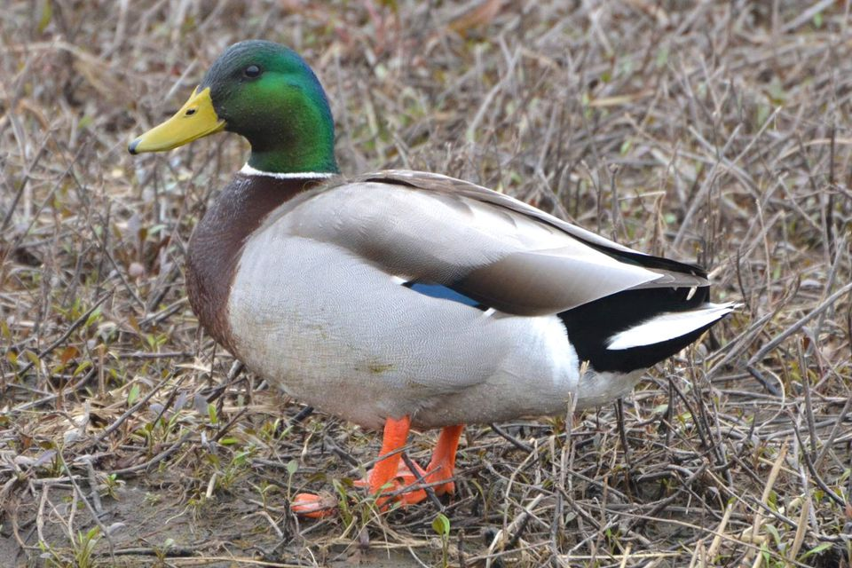
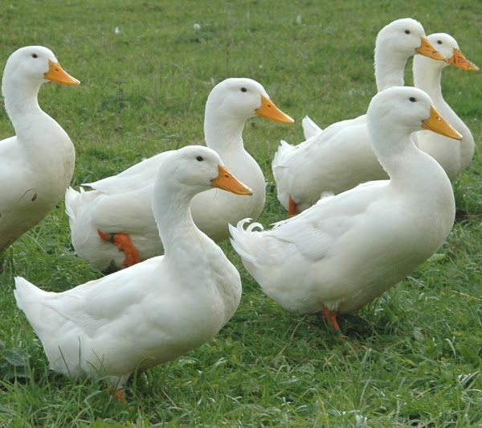
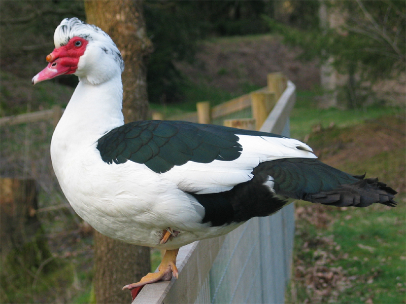
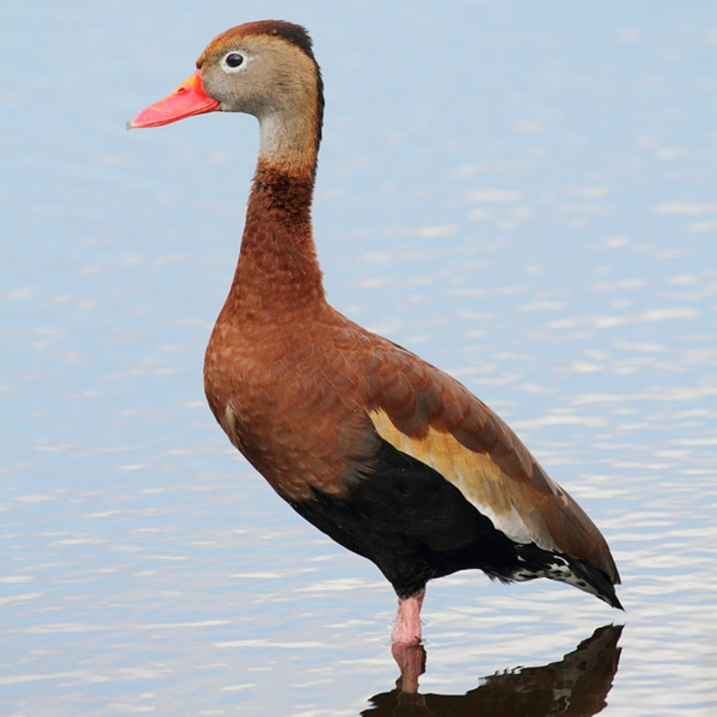
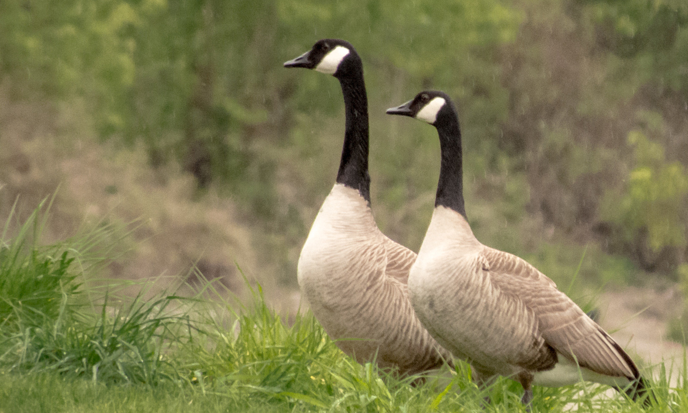
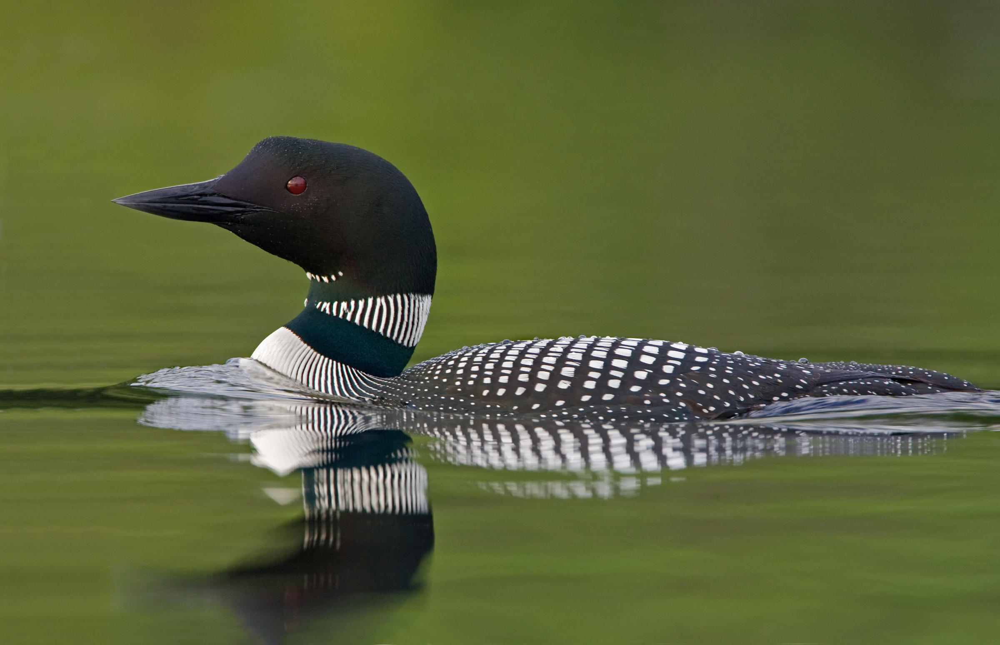

Ducks are aquatic birds. They are often found in ponds or small ravines. Sadly it is becoming harder to see them because of urbanization. But did you know that there are actually domestic ducks as well? They are raised for their meat, eggs, down, and sometimes even to be kept as pets.
|  |
Scientific name: Anas Platyrhynchos Lifespan: 5-10 years (in the wild) Conservation Status: Least Concern Wingspan: 32-37 inches Weight: 2-3 lbs |
The mallard is very common type of duck. They are the ones that you would be most likely to find if you were to take a walk in the park. Mallards are present in most of the Americas, Eurasia, and North Africa, and have been introduced to many different countries. They are also migratory ducks, flying down to Mexico, Central America, and the Caribbean during the winter. Along with the Muscovy duck, Mallards are considered to be the ancestor of all domestic ducks today.
Mallards are dabbling ducks, meaning shallow water ducks that feed near the surface of the water. They are actually omnivores, so they can eat both plants and animals.
Female ducks are usually a light brown with a black tipped beak while in the mating season, males have an iridescent green head, yellow beak, and a black rear. When not in the mating season, the males adopt more of the female’s look while still maintaining their yellow beak and reddish breast feathers. Both the male and the female mallard have a blue & black band of feathers on their wings which is edged in white, called the speculum, and can be seen during rest or flight.
Mallards form pairs during summer. However, the male duck will only stay with his partner until she has laid her eggs, after which he will leave her to find another mate. The female duck lays between 9-12 eggs. The newborn ducks are “precocial”, meaning they hatch developed and not helpless. They can swim well enough by themselves but they stay close to their mother for protection. The ducklings are prey for large birds such as heron, large fish such as pike, and foxes on land. The adult ducks are safe in flight, except from the occasional Peregrine Falcon that might cross its path.
These are the ducks that are raised in captivity for their meat, eggs, and down. Almost all varieties of this duck are descended from the Mallard, except for the Muscovy duck. You can even find nutrition facts for the domestic duck if you search on the internet.
There are over 22 breeds of domestic ducks, including but not limited to Abacot Ranger, Aylesbury, Blue Swedish, Call, Crested, Hook Bill, Indian Runner, Muscovy, Orpington, Pekin, Rouen, Saxony, and Welsh Harlequin, and 4 classifications: light, heavy, bantam, and runner.
|  |
Uses: meat Eggs: 60 - 140 white eggs Origin: China Weight: Drake (male): 4.1 kg, Duck (female): 3.6 kg Classification: Heavy |
The Pekin duck is most famous for its meat, which is a high quality tender meat that they produce by around 8 weeks of age. Majority of the duck eaten in the US is Pekin duck.
The bills, legs, and webs of the Pekin duck are bright orange while their feathers are cream. The European Pekin stands very upright, almost like a penguin, while the American Pekin is less upright
|  |
Uses: As a meat Eggs: 60 - 150 eggs Origin: America Weight: Drake (male): 4.5 - 6 kg, Duck (female): 2.5 - 3 kg Classification: Heavy |
The Muscovy duck is the only domestic duck not descended from the mallard. They are part of a subgroup of ducks called “greater wood ducks”. These ducks are mainly from the tropics, and are native to some parts of North and South America, yet sometimes they can be found in Europe. Their feet have very sharp claws that allow them to perch well and they have a bright red crest around their eyes which is called a caruncles.
There are many types of whistling duck including but not limited to Fulvous whistling ducks, Black-bellied Whistling-Ducks, White-faced whistling ducks, Lesser whistling ducks, Wandering whistling ducks, Plumed whistling ducks, Spotted whistling ducks, and West Indian whistling ducks.
|  |
Habitat: Marsh Food: Plants Behavior: Dabbling duck Conservation: Low Concern |
Black-bellied Whistling-Ducks eat mainly plants and agricultural crops, but sometimes will eat small aquatic animals such as insects, spiders, and snails. Typically they forage at night, feeding in fields or dabbling in small ponds.
The female duck will lay around 9-18 white eggs. When the ducklings hatch, they are almost completely independent.
Black-bellied Whistling-Ducks have long legs and prefer to spend more time on land than the average duck. They are gregarious and year-round, meaning they form large flocks and stay year-round, and they will form flocks of up to 1000 birds. These ducks for lifelong bonds in the winter and will breed in their first year of life. Predators include raccoons, snakes, fire ants, bass, catfish, gar, and Great Horned Owls.
Some other types of ducks are:
Geese are like ducks, but different. The most common type of goose found in Canada is the appropriately named Canadian goose.
|  |
Scientific name: Branta canadensis Average weight: 1.1 - 8 kg Average wingspan: 127 - 173 cm |
Although Canadian geese are considered waterfowl they spend approximately equal amounts of time on land and in water. These geese are vegetarian and will often eat for 12 or more hours a day to consume all of the nutrients they need.
Canadian geese migrate south for the winter. They fly in a “V” pattern. The v-shape is beneficial as it helps the geese save energy when flying by using air currents passed by the leader and it allows for easier coordination of the flocks movements.
Adult geese have around 13 different calls. Even the goslings can start to communicate to their parents while they are still in the egg.
|  |
Weight: 2.7 – 6.3 kg Length: approx. 1 m Bill length: 75 mm Bill colour: Black |
The common loon has a black-and-white checkered back, glossy black head, white belly and wing lining, and a white “necklace” around its throat. All loons have grey feathers in the winter and the young birds tend to resemble the adults. Loons are designed for excellent swimming and diving. Their legs are placed at the back of their body and are powerful, and their head can be held in line with their body to reduce drag.
Loons have four distinct calls: the wail, tremolo, yodel, and hoot. These can be used in different combinations to communicate between loons.
The common loons breeds throughout most of Canada. It spends the rest of its time on the Atlantic and Pacific coasts of North America.
Loons are predators. They eat many small aquatic animals, but the adults prefer fish to other prey.
Here is some extra information on ducks if you wish to research farther.
To the top ↑